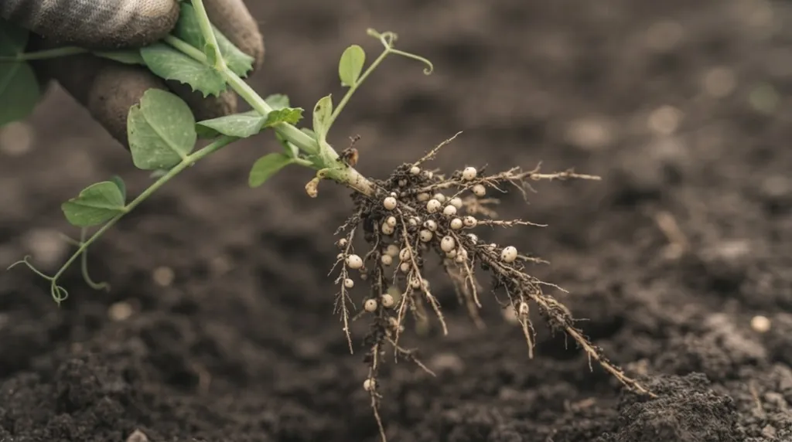

Коротко
- Найкращі попередники озимої пшениці: пар, багаторічні трави, зернобобові.
- Цукровий буряк ставлять після озимої пшениці або зернобобових і повертають не раніше ніж через 3 роки.
- Соняшник не повертають раніше ніж через 7 років.
- На Полтавщині пшениця після гороху дала 4,52 т/га, після пшениці 2,96 т/га.
- Таблиця дає типові рекомендації. Точний вибір залежить від зони, вологи й попереднього захисту.
Таблиця попередників
У колонці «Кращі» попередники йдуть від найкращого до гіршого, а в колонці «Допустимі» ті, що можна брати, якщо кращих немає, але з додатковим удобренням чи захистом. Це типові рекомендації, які залежать від зони, вологи й історії поля. Мінімальні паузи повернення подано за постановою КМУ № 164.
| Культура | Кращі попередники | Допустимі, але гірші | Повернення на те саме поле не раніше ніж через |
|---|---|---|---|
| Озима пшениця | Пар, багаторічні трави, зернобобові | Просапні, озимі після чистого пару | 2 роки |
| Ярий ячмінь, овес, гречка | Просапні, зернобобові | Озимі, однорічні трави | 1 рік |
| Просо | Багаторічні трави, зернобобові | Просапні (крім соняшнику), озимі | 2 роки |
| Кукурудза | Озимі, зернобобові, цукровий буряк | Інші просапні, кукурудза на силос | можна 2–3 роки поспіль |
| Соняшник | Озима пшениця, ячмінь | Просапні | 7 років |
| Цукровий буряк | Озима пшениця, зернобобові | Інші озимі | 3 роки |
| Картопля | Озимі, люпин і інші зернобобові | Інші культури за достатнього удобрення | 2 роки |
| Горох та інші зернобобові | Удобрені просапні (картопля, кукурудза, цукровий буряк) | Озимі й ярі зернові | 3 роки (люпин 6) |
| Однорічні трави | Просапні, ярі зернові | ||
| Багаторічні трави | Підпокривні посіви під ячмінь, овес, віко-вівсяну суміш, озимі | 3 роки (бобові) |
Дві примітки. Для ріпаку озимого й ярого постанова визначає паузу в 3 роки, а для сої паузу не називає, тож її місце в схемі визначають за агрономічною логікою. Багаторічні трави у польових сівозмінах краще сіяти під покрив зернових, безпокривні посіви економічно невигідні й швидко засмічуються.
Що показують досліди
Таблиця це знання, зібране за десятиліття. Цікаво, як воно виглядає в цифрах конкретного досліду.
Полтавська державна сільськогосподарська дослідна станція (Лівобережний Лісостеп) три сезони тримала озиму пшеницю після різних попередників на тому самому живленні N50P50K50.
| Попередник | Урожайність пшениці, т/га | Доступна волога навесні, мм (1,5 м) |
|---|---|---|
| Горох на зерно | 4,52 | на 2,8–5,6% менше, ніж після пару |
| Еспарцет на один укіс | 4,45 | на 2,9% менше, ніж після пару |
| Чорний пар | 4,11 | 250,9 |
| Пшениця | 2,96 | 197,7 |
Порядок цікавий. Горох і еспарцет перемогли за зерном, а пар за вологою. Тобто «найкращий» попередник залежить від того, що вам важливіше і який рік. Автори дослідження підкреслюють: чорний пар виправдовує себе в посушливі роки, а у вологі пшениця після нього схильна до вилягання, і врожай падає.
Другий дослід, з Правобережного Лісостепу, показав, що попередник не мусить бути «повторним», щоб програти. Пшениця після кукурудзи на силос при оранці дала 5,01 т/га, на 11,9% менше, ніж після гороху.
Три правила, які працюють майже завжди
Перше. Вимогливу культуру ставлять на найкраще місце. Для озимої пшениці це пар, багаторічні трави чи зернобобові, для цукрового буряку озима пшениця чи зернобобові. Решта культур беруть те, що лишилося.
Друге. Не ставте культуру після тієї, з якою вона ділить хвороби чи бур’яни. Із соняшником працює ще й зворотне правило: щоб його падалиця не лізла в наступні посіви, його часто ставлять перед просапними культурами або чистим паром, де її можна знищити обробітком.
Третє. Бобові, а за ними озимі, дають наступній культурі кращий старт. Бобові залишають наступній культурі частину азоту, і саме тому горох вигідно ставити в ланку з озимою пшеницею: у полтавському досліді ця пара дала найвищий урожай.

Як зібрати з цих попередників повну схему з урахуванням часток і пауз, показано в статті «Як скласти схему сівозміни». А для овочів з іншою логікою читайте про овочеві попередники.
Часті запитання
Який найкращий попередник для озимої пшениці?
Залежить від зони й року. У Полтавському досліді найвищу врожайність дала пшениця після гороху на зерно (4,52 т/га) і еспарцету на один укіс (4,45 т/га). Чорний пар (4,11 т/га) дав найбільший запас вологи навесні, тому в посушливі роки лишається сильним варіантом.
Чи можна сіяти пшеницю по пшениці?
Можна, але дорого. Постанова КМУ № 164 допускає повернення озимої пшениці не раніше ніж через 2 роки, а в Полтавському досліді повторний посів дав на 28–34,5% менше зерна, ніж після кращих попередників.
Після чого сіяти цукровий буряк?
Традиційно після озимої пшениці або зернобобових. На те саме поле його повертають не раніше ніж через 3 роки за постановою, а агрономи частіше радять 3–4.
Чому соняшник не можна часто повертати на те саме поле?
Постанова вимагає паузи щонайменше сім років. Причина в хворобах і падалиці, які накопичуються у ґрунті, якщо соняшник іде часто.

Директор НВ ТОВ «СІНТА», розробник органічних добрив ТМ GREENODIN.
Опубліковано 12 жовтня 2026. Оновлено 12 жовтня 2026.
Джерела
- Постанова КМУ від 11.02.2010 № 164 «Про затвердження нормативів оптимального співвідношення культур у сівозмінах в різних природно-сільськогосподарських регіонах»
- Гангур В. В., Котляр Я. О. Вплив попередників на водоспоживання та продуктивність пшениці озимої в Лівобережному Лісостепу України. Вісник Полтавської державної аграрної академії, 2021, № 1, с. 122–127
- Центило Л. В., Шило С. Л. Вплив основного обробітку ґрунту та попередників на продуктивність пшениці озимої у Правобережному Лісостепу України. Збірник III Міжнародної наукової інтернет-конференції, Київ, 2021, с. 290–291